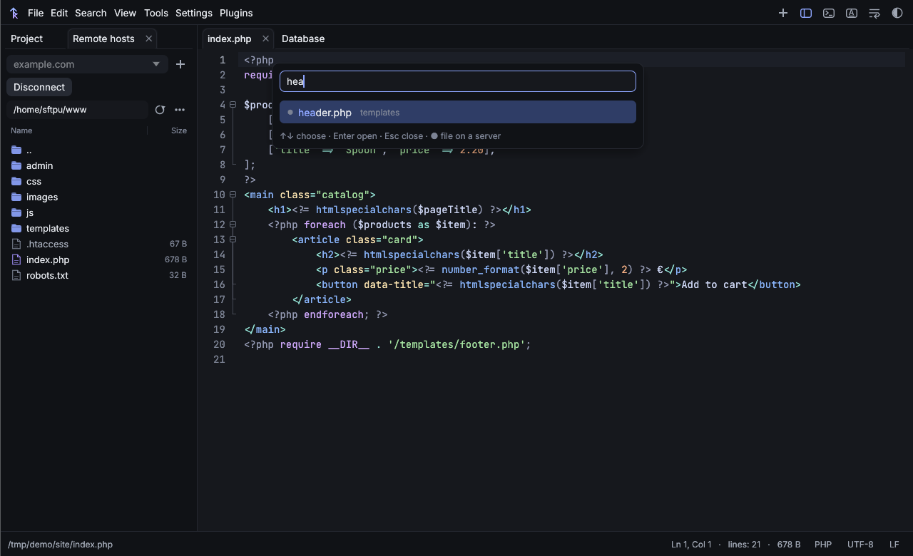
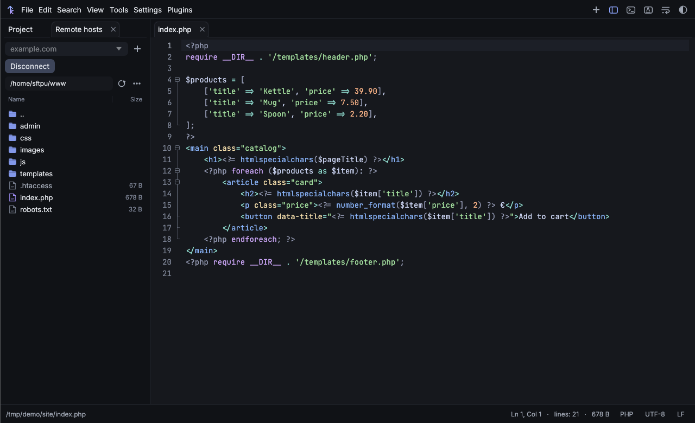
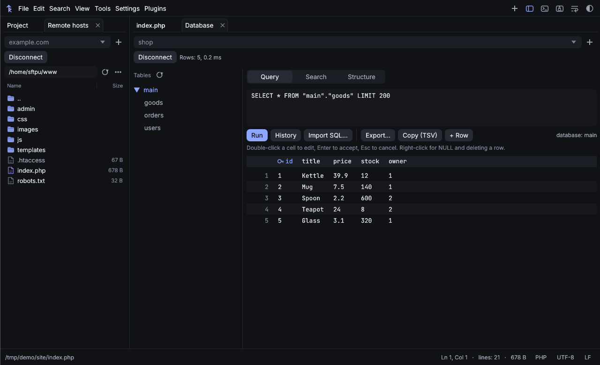
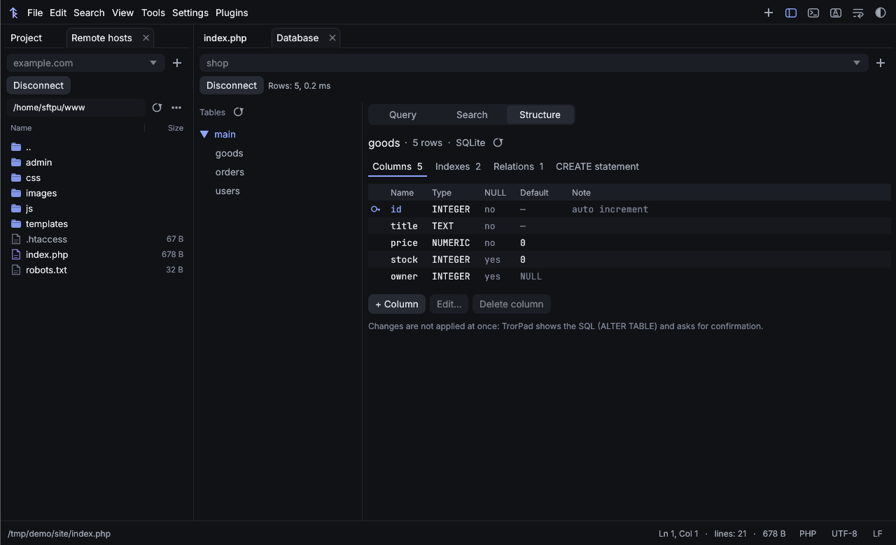

Install
Every release has ready-made files on the releases page. TrorPad is one program file; it does not need a runtime or extra libraries.
Windows
trorpad-setup.exe installs TrorPad with a Start menu shortcut and an “Open in TrorPad” item in the file menu. trorpad.exe runs without installation.
The files are not code-signed yet, so SmartScreen asks first: choose “More info”, then “Run anyway”.
macOS
Unpack TrorPad-macos.zip and move TrorPad.app to Applications.
On the first launch, right-click the app and choose “Open”, or run xattr -dr com.apple.quarantine /Applications/TrorPad.app.
Linux
Download trorpad-linux-x86_64, make it executable and run it:
chmod +x trorpad-linux-x86_64
./trorpad-linux-x86_64With a package manager
Scoop on Windows:
scoop bucket add trorpad https://github.com/Jozef2J/tror
scoop install trorpadHomebrew on macOS (the app) and on Linux (the program file):
brew tap jozef2j/tror https://github.com/Jozef2J/tror
brew install --cask trorpad # macOS
brew install trorpad # LinuxInstalled this way, TrorPad does not update itself: use scoop update trorpad or brew upgrade trorpad.
First steps
Open a folder with Ctrl+Shift+O (or drop it on the window): it becomes the project on the left. Files open with a double click; a file dropped on the window opens in a new tab.
You don’t have to look for files in the tree. Press Ctrl+P and type a few letters of the name: the list shows open tabs, project files and the files of a connected server. Start the query with > to run any command by name, or with : to go to a line. F1 opens the same window in command mode.

Panels can be dragged by their tab, docked to any edge, detached into their own window or closed. View → Reset panel layout brings the standard layout back.
Servers
Open Remote hosts with F8, press + and fill in the profile: protocol (SFTP, FTP or FTPS), address, user, password or key, and the folder to open. OpenSSH and PuTTY (.ppk) keys work. If you already keep sites in FileZilla or WinSCP, use Import… in the profile window.

Editing files on the server
A file opened from the server is saved back with Ctrl+S. Before saving, TrorPad checks whether someone changed the file on the server after you opened it; if so, it offers to compare the versions or overwrite. The previous server version is kept as a local backup (File → Server backups). The new version is uploaded under a temporary name and then renamed, so a dropped connection does not leave a half-written file.
Transfers
- Drag files and folders between the server, the project and the desktop. Large transfers show a window with progress, pause and cancel.
- Right-click a file for Download to folder…, Download as…, permissions, renaming and archives.
- Compare with the server version (in the tab menu) shows what differs between your local file and the one on the server.
- Folder sync uploads or downloads only what changed, with include and exclude masks.
Passwords are kept in the system credential store (Windows Credential Manager, macOS Keychain, Secret Service on Linux), not in the settings file.
Console
F9 opens the console. A server profile from Remote hosts opens as an SSH session in one click; Telnet and Mosh profiles and a local terminal (PowerShell, bash or zsh) are in the + menu. Sessions open in tabs, and the color scheme and font can be set per profile.
Databases
Open View → Database, create a connection (MySQL/MariaDB, PostgreSQL or a SQLite file) and press Connect. A connection can go through the SSH tunnel of a server profile and over TLS.

- Query runs SQL with Ctrl+Enter; a selected fragment runs on its own. Earlier queries are under History.
- Search finds a value in every table of a database without writing SQL.
- Structure shows the columns, indexes, foreign keys and the CREATE statement of a table. Columns can be added, changed and deleted: TrorPad shows the
ALTER TABLEit will run and waits for you to confirm. - SQL dumps and CSV files can be imported; results export to CSV, JSON and SQL.

Editor
- Opens files of 50 MB and more without delay and highlights about 200 languages.
- Search and replace in a file (Ctrl+F, Ctrl+H) or across the project (Ctrl+Shift+F), with regular expressions. Before replacing on disk, TrorPad keeps copies so the change can be undone.
- Several cursors: Ctrl-click, Ctrl+Alt+↓, or Alt-drag for a column. Tab and Shift+Tab indent every selected line.
- Folding, bookmarks (Ctrl+F2, F2), named macros (Ctrl+Shift+R), file comparison.
- The visual editor (Ctrl+Shift+E) edits HTML, PHP and Twig pages as formatted text and leaves PHP and Twig blocks untouched. Text pasted from Word or Google Docs keeps its structure and loses colors and fonts.
- Unsaved work survives a crash: on the next start TrorPad restores the tabs.
Keyboard shortcuts
The most used ones. All shortcuts can be changed in Settings → Keyboard shortcuts; on macOS Ctrl is ⌘.
| Keys | Action |
|---|---|
| Ctrl+P | Quick open a file |
| F1 | Command palette |
| Ctrl+S | Save (to the server for server files) |
| Ctrl+Shift+T | Reopen a closed tab |
| Ctrl+F / Ctrl+H | Find / replace |
| Ctrl+Shift+F | Find in project files |
| Ctrl+G | Go to line |
| Ctrl+Shift+D / Ctrl+Shift+K | Duplicate / delete line |
| Alt+↑ / Alt+↓ | Move line up / down |
| Alt+Z | Word wrap |
| F7 / F8 / F9 | Project / remote hosts / console |
| F12 | Preview in the browser |
| Ctrl++ / Ctrl+− / Ctrl+0 | Editor font size |
Plugins
Plugins are written in Rust and compiled to WebAssembly. A plugin runs in a sandbox and gets only the permissions it asks for and you accept at installation: files of the project, the network, server profiles or databases. Passwords are never passed to plugins.
Install a plugin with Plugins → Manage plugins… → Install from zip…. To write one, start with the SDK guide and the text-tools example.
Settings, updates and privacy
Settings are under Settings (Ctrl+,): theme, fonts, colors, shortcuts, language (English or Russian) and more.
TrorPad checks GitHub for a new version and installs it with one click; the check can be turned off. It sends nothing else anywhere: no telemetry, no accounts. Details are in the privacy notice.
Found a problem or missing something? Open an issue on GitHub. If TrorPad crashed, it opens the crash report on the next start — attach it to the issue.